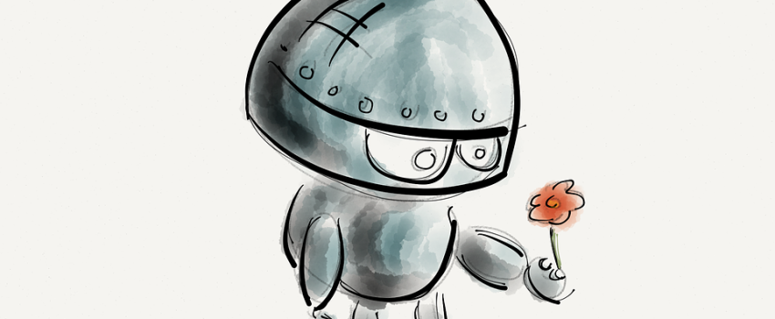

Intelligenza Artificiale, Chatbot e Customer Experience.

L’Intelligenza Artificiale è sempre più utilizzata al fine di integrare le interazioni cliente-azienda con i servizi più innovativi e completi, come le chatbot.
Ma quali misure possono adottare le aziende per sfruttarla al meglio?
Trovare il giusto equilibrio tra l’automazione e l’elemento umano è la chiave del successo.
Commettere un errore nel Customer Care, ad oggi, significa per un’azienda rischiare di perdere per sempre un cliente e di danneggiare irrimediabilmente la propria immagine.
Oggi i consumatori hanno esigenze sempre più raffinate, pretendono una gratificazione immediata qualunque sia il servizio che richiedono e le limitazioni nella fornitura di tali servizi, come tempi d’attesa catastrofici o personale non addestrato, causano danni terribili a quelle aziende che non sono ancora al passo con queste esigenze.
Si stima che circa i due terzi dei clienti abbandonano le aziende a causa di un Customer Service scadente, così che quando Zuckerberg nella conferenza F8 di quest’anno ha parlato di un nuovo servizio rivolto ai clienti in grado di soddisfarli pienamente, è sembrato mostrasse il nirvana alle aziende in ascolto.
I possessori di Smartphone interagiscono quotidianamente con i bot, dai messaggi di testo per le prenotazioni automatiche, le spedizioni o i pagamenti, all’uso di Siri, Cortana e Google Now. In molti però non sanno ancora cosa siano le chatbot e quale sia il loro reale potenziale nell’ambito del Customer Care.
Innumerevoli aziende e opinionisti hanno discusso su come questa tecnologia rivoluzionaria cambierà tutto. Si prevede che i bot in pochi anni saranno il principale punto di interazione tra le aziende e i clienti. La tecnologia a riguardo sarà impegnata in un tour de force che porti al massimo le prestazioni garantendo l’efficienza di ogni servizio.
La Customer Experience sarà portata ad un livello sempre più alto.
Siamo giunti ad un bivio in cui le aziende ormai solide devono scegliere se restare indietro nel tour de force tecnologico o investire per competere con le start-up.
La messaggistica mobile e l’integrazione dell’assistenza sui social si basano oramai sul principio di offrire al cliente il servizio migliore, consentendo loro di connettersi ovunque si trovino e di risolvere istantaneamente le problematiche più comuni.
Le aziende in grado di padroneggiare queste tecnologie saranno in grado di prosperare nell’ambiente cliente-centrico che si sta sviluppando. Quelle che, invece, non saranno in grado di rinnovarsi e stare al passo con le nuove tecnologie, non rischiano di perdere soltanto il primato nel loro settore, ma di avere forti perdite di guadagno.
Trovare il giusto equilibrio tra automazione ed elemento umano è la chiave per un buon servizio clienti. Anche se le chatbot sono in grado di risolvere i problemi più semplici e comuni che un utente possa porre, è importante offrire sempre la possibilità all’utente di avere un supporto umano, in grado di arrivare là dove la chatbot non può.
La sorprendente innovazione dei bot è relativa al fatto che, quando non è più loro compito rispondere all’utente ed è necessario l’intervento umano, il passaggio avviene in maniera immediata e nella massima efficienza.
A breve i migliori team di Customer Care saranno quelli in cui vi è sia la presenza delle Intelligenze Artificiali più all’avanguardia che l’esperienza umana pronta a intervenire ad ogni necessità. Le aziende, anche le più solide, non possono permettersi di perdere gli utenti per errori attribuiti ad un sistema fallimentare, per questo software e operatori avranno pari importanza nella gestione del Customer Care.
Le chatbot, benché basate su avanzate forme di Intelligenza Artificiale, non sono ancora in grado di affrontare le situazioni più complesse e dalle molteplici sfumature che i clienti possono presentare quotidianamente.
Quindi, se da un lato è giusto essere entusiasti per la possibilità di offrire i bot di assistenza ai propri clienti, è fondamentale ricordare che la ragione principale per cui le persone amano i servizi di messaggistica è perché credono vi sia un essere umano pronto a rispondere all’altro capo della linea (e per questo motivo anche i messaggi automatici dovrebbero essere quanto più umani possibile).
Il valore delle Chatbot
Il valore reale della chatbot è la possibilità di integrare molteplici servizi al cliente in un’unica, completa, piattaforma, fino a giungere all’offerta di un servizio Omnichannel.
Progettate per simulare una conversazione reale, le chatbot sono perfette per alcune attività semplici come effettuare una prenotazione, ordinare un prodotto, essere avvisati sugli aggiornamenti di una consegna.
Tuttavia, quando è necessario avere un aiuto supplementare, il cliente deve essere in grado di passare senza problemi dall’assistenza offerta dalla chatbot a quella offerta da un operatore.
I clienti hanno la necessità di sapere che ci sarà qualcuno disponibile, pronto ad ascoltare i loro problemi se la chatbot non dovesse essere in grado di risolverli.
La soddisfazione del cliente è fondamentale per il successo aziendale.
Dal punto di vista degli operatori, le chatbot alleggeriranno moltissimo il loro lavoro e la qualità del lavoro stesso, occupandosi della gestione delle richieste banali e ripetitive. Questo filtro basato sulla qualità della richiesta, permetterà di diminuire drasticamente i tempi di attesa, formando un servizio di Customer Care efficace e tempestivo, pronto a risolvere le problematiche più complesse perché non impegnato con quelle quotidiane e semplicistiche.
La necessità di interagire con altri esseri umani non potrà mai essere sostituita da altro: le chatbot non porteranno alla morte della figura degli operatori, ma ridefiniranno il servizio offerto in termini di qualità e rapidità.
Roberta Gallo